Studio Commercialista
Evoluzione da conformità fiscale a controllo di gestione scalabile per 50 clienti con Token Paralleli.
PMI Manifatturiera
Gap analysis margini di commessa e audit dei colli di bottiglia operativi senza costosi advisor esterni.
Rete B2B & Associazioni
Mappatura automatica dei fabbisogni dei membri e generazione di referral qualificati cross-settore.
Executive & Time Allocation
Allineamento tra priorità strategiche, energia individuale e riorganizzazione del workflow personale.
Pianificazione Patrimonio & Famiglia
Governance delle decisioni patrimoniali e passaggio generazionale con totale privacy on-device.
Decision Making Sotto Stress
Strutturazione deterministica delle alternative per ridurre il carico cognitivo e l'indecisione.
AI Augmented Sales (Beyond CRM)
Trasformazione della forza vendita con metodologie di vendita consulenziale aumentate da AI offline.
Upskilling Manageriale Deterministico
Percorsi di apprendimento guidati su 953 (~1.000) nodi senza sintesi approssimative dei contenuti core.
Certificazione Competenze Advisor
Addestramento operativo per l'applicazione delle 400 lenti direzionali sui bilanci aziendali.
Protocolli di Longevità & Focus
Integrazione di routine nutrizionali, recupero e supplementazione (C8 MCT) con metriche oggettive.
Prevenzione Burnout & Carico Psicofisico
Monitoraggio deterministico dei segnali precoci di sovraccarico lavorativo ed equilibrio biologico.
Corporate Wellness per PMI
Programmi su misura per team operativi volti ad aumentare lucidità mentale, salute e retention.
Profilo Studio Commercialista (Token Parallelo)
400+ DOTs Controllo Direzionale & Margini
Palestra di 21 Giorni & Allocazione a 3 Vie (Fai-da-Te / Proven SME / Rete)
Advisor Fiscale / Fractional CFO
Calcolo deterministico in RAM tramite _healDatabaseRollups. Nessuna allucinazione o dispersione generativa cloud.
► #412: Gap Analysis Margini & Scaduto
Lo Studio genera l'audit direzionale completo in autonomia per la propria azienda cliente.
Architettura Adattiva per Ogni Dominio di Conoscenza
Sia applicato ad un grande studio professionale, ad una linea di vendita complessa, alla routine individuale o al benessere biologico, CtD mantiene intatta la sua promessa brevettata: zero internet footprint, calcolo esatto in RAM e totale sovranità del dato.
Connect the DOTS — 3 Systems in 1 Platform
Dalla qualificazione causale del problema nel tuo Profilo aggiornato (100% offline) alla pianificazione esecutiva nella Palestra di 21 Giorni, fino allo sblocco relazionale e transattivo Pull nella Community of Interest.

Capire Dove Sei (S = C + P + T + R)
- Coach "intelligente (senza artificiale, ricco dell'intelligenza umana degli SME) e privato": partire dal Cervello prima di Sinapsi o Pratica.
- L'"Esperanto" comune (~1.000 nodi in italiano chiaro ordinati con
sort_order) che abilita un'Intelligenza Relazionale ecologica e sostenibile. - Navigazione flessibile (L0 → L3): partenza dal Cervello o selezione diretta di un altro nodo L0 cliccando su Orizzonti.
- Qualificazione dell'esigenza (DOT L2 Problema): passaggio dal "non so cosa non so" al riconoscimento del vero problema L2 padre.
- Meccanismo della Proliferazione (NBD → NBA → NBM): individuazione per nesso causale del DOT L3 Soluzione (L3 Ancora).
- SWOT in RAM (
_healDatabaseRollups): nodi ignoti = Debolezza 10/10 e Minaccia 10/10; tasto Pausa = reset a '0' per spendere tempo di qualità. - Profilo aggiornato 100% offline: metriche generalizzate oltre il fatturato, Regime Fiscale iniziale, Scudo di Anonimizzazione AI e compliance GDPR / EU AI Act.
- Triage Diagnostico propedeutico e non costrittivo: percorsi assistiti trasparenti e risposte pre-confezionate + opzione "Altro" (con invito a specificare).
Pianificare l'Azione e Costruire R
- Dalla teoria alla pratica: aiutare Persona, Professionista o PMI a diventare padroni del proprio futuro senza standardizzarne i fini.
- Proliferazione progettuale (To-Do / MIO_Idea → L3 Progetto / MIO_Goal): trasformazione del compito in cantiere mantenendo la gerarchia verticale (
parent_uuid). - Sinapsi orizzontali bidirezionali (MIEI ↔ MIEI): tracciamento logico (
evolvedFrom/peerFlowinUserSynapseState) senza alterare la struttura. - Aiuti concreti sull'L3 Ancora (Mattoni L3): scomposizione dei passi pratici che separano lo stato attuale (P) dal traguardo (T).
- Allocazione a 3 vie (Smistamento sovrano): scelta per ogni mattone tra Fai-da-Te (Palestra), Vista 1 (Provider P&S / Proven SME), Vista 2 (Rete IR) + "Altro".
- Palestra di 21 Giorni — Costruzione di R e "Cordone Ombelicale": 21 giorni operativi che legano anche il professionista (es. Barbarossa) ai suoi migliori clienti.
- Certificato Proof-of-Result (PoR) e Qualifica a "Proven SME": scudo crittografico (2-of-2 Multi-Sig); raggiungendo R ≫ su un DOT, CtD qualifica l'utente per essere cooptato (con consenso scritto) sull'L3 Ancora.
- Mini micro-blockchain offline (
local_source_chain): integrità locale dei punteggi e dei certificati anti-manomissione SQLite a costo server zero.
Ingegneria Relazionale Pull & HTLC
- Rivoluzione da Push a Pull: inimitabilità garantita da +50 anni di esperienza, +2 anni di sviluppo AI e doppio brevetto.
- Genealogia relazionale (
ir_contacts_graph): tracciamento di "chi mi ha presentato chi" (introduced by) tra Capitoli (BNI Barbarossa & beyond) e network. - Calcoli in tempo reale in RAM: Score Diretto (chi risolve direttamente l'L3) vs Score Ponte (chi introduce al 2° grado).
- Capsule da 1 KB (Anonimizzate),
.ctdire QR: "Prodotti / Servizi / Relazioni personalizzate a disposizione on-demand" cablate sul singolo L3 Ancora per essere oggetto di Pull. - Smart Source-Routing e Salto del 1° Grado: Next Best Match (NBM) riservato senza mai mostrare le proprie debolezze 10/10 agli amici o contatti diretti.
- Compensazione transattiva in-Lire Fluida (HTLC): scambio di beni, servizi e referenze come motore di retention e lead generation per circuiti esistenti (in-Lire e competitor).
- Doppio binario transattivo: Binario 1 (Ore-Palestra tra individui) e Binario 2 (Crediti B2B) raccordati al Regime Fiscale richiesto in input iniziale.
- Layer-1 P2P (Bonjour + AirDrop) + Layer-2 Super-Ponte & NEXUS: invio del profilo con R ≫ all'Admin di CtD che, dopo verifica, lo incorpora nella lista di distribuzione della Community.